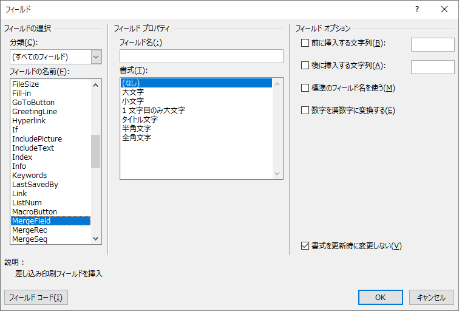

3.1.1. マージフィールド（MergeField）の設定
Microsoft Wordで差し込み印刷をする場合に、さまざまな情報の出力先となるフィールドです。マージフィールドの設定について説明します。
MergeFieldの挿入方法
MergeFieldは次の手順で挿入できます。
［挿入］タブの［テキスト］の［クイック パーツ］から「フィールド」を選択します。
［フィールド］画面で「MergeField」を選択します。

［フィールド名］を設定します。
［書式を更新時に変更しない］をオフにします。
［OK］ボタンをクリックします。
マウスカーソル位置にフィールドが挿入されます。MergeFieldの挿入後はフィールド名が「<<フィールド名>>」の形式で表示されます。
<<フィールド名>>
MergeFieldの書式を設定する
入力データと出力データで形式（フォーマット）を変更したい場合、MergeFieldオプション（書式）を設定することで変更できます。
MergeFieldの書式は、挿入したMergeFieldを画面から設定するか、フィールドの設定（フィールドコード）をWord文書内で表示して直接編集するかのどちらかの方法で設定します。
書式の定義
このマニュアルでは、「書式」を次のように定義します。
書式オプション
文字列データに対して、データの大文字と小文字、全角と半角などの書式を変更するための書式です。
数値オプション
数値データに対して、3桁でカンマ区切りをするなどの書式を変更するための書式です。
日付オプション、時刻オプション
日付データに対して、西暦や和暦など表示形式を変更するための書式です。
スイッチ
フィールドに出力されるデータに関係なく設定できる補助的な書式です。画面上では、フィールドオプションと呼ばれています。
画面で設定する
MergeFieldに出力するデータの形式によってオプションの設定方法は異なります。
参考
数値オプション、日付オプション、時刻オプションを設定したMergeFieldを、再び画面から編集する場合、フィールドコードにはMergeFieldに設定されている各オプションが表示されません。設定内容を確認したい場合は、「フィールドコードを直接編集する」の方法でフィールドコードを編集してください。
文字列の場合
Word様式ファイル上に設定したフィールドを右クリックして、［フィールドの編集］を選択します。
［フィールド］画面が表示されます。
［書式］で次のいずれかを選択します。Word様式で設定できる項目は次のとおりです。
大文字
小文字
1文字目のみ大文字
タイトル文字
［OK］ボタンをクリックします。
数値、日付、時刻の場合
Word様式ファイル上に設定したフィールドを右クリックして、［フィールドの編集］を選択します。
［フィールド］画面が表示されます。
［フィールドコード］をクリックします。
フィールドコード（フィールドの設定内容）が表示されます。
各オプションを設定します。
設定方法の詳細は、「フィールドコードを直接編集する」を参照してください。
［OK］ボタンをクリックします。
フィールドオプションを設定する場合
Word様式ファイル上に設定したフィールドを右クリックして、［フィールドの編集］を選択します。
［フィールド］画面が表示されます。
［フィールドオプション］で次のいずれかを選択します。Word様式で設定できる項目は次のとおりです。
前に挿入する文字列
後に挿入する文字列
［OK］ボタンをクリックします。
フィールドコードを直接編集する
フィールドの設定内容をフィールドコードと呼びます。ここではフィールドコードを直接編集する方法を説明します。
設定したMergeFieldを選択して右クリックし、「フィールド コードの表示/非表示」を選択します。
次の形式で表示されます。△は半角スペースを示します。
{△MERGEFIELD△△フィールド名△}フィールド名の後ろの半角スペースの後に設定したい書式を半角文字で設定します。
フィールドのデータが文字列の場合
「\*」のあとに書式オプションのフィールドコードを追加します。
フィールド名をすべて大文字に変換する場合の例を次に示します。
{△MERGEFIELD△△フィールド名△△\*△Upper}フィールドのデータが数値の場合
「\#」のあとに数値オプションのフィールドコードを追加します。
数値の桁数が3桁以下の場合に、余分なスペースが入らないように変換する場合の例を次に示します。
{△MERGEFIELD△△フィールド名△△\#△0,}フィールドのデータが日付または時刻の場合
「\@」のあとに日付オプションのフィールドコードまたは時刻オプションのフィールドコードを追加します。
日付を「yyyy/MM/dd」の形式に変換する場合の例を次に示します。
{△MERGEFIELD△△フィールド名△△\@△yyyy/MM/dd}
それぞれの書式の設定内容の詳細は、「Word様式ファイルで使用できるMergeFieldの書式」の「フィールドコード」を参照してください。
スイッチを追加する場合は、書式の後に半角スペースを挿入します。
参考
スイッチを書式の前に追加することもできます。
スイッチを設定します。
詳細は、「Word様式ファイルで使用できるMergeFieldの書式」を参照してください。
設定した内容を保存します。
次の形式で表示されます。△は半角スペースを示します。
{△MERGEFIELD△△フィールド名△△\*△<書式オプション>} {△MERGEFIELD△△フィールド名△△\#△<数値オプション>} {△MERGEFIELD△△フィールド名△△\@△<日付オプション、または時刻オプション>}スイッチはオプションのあとに追加されます。
別の書式に変更する場合には、それぞれの書式部分を上書きします。